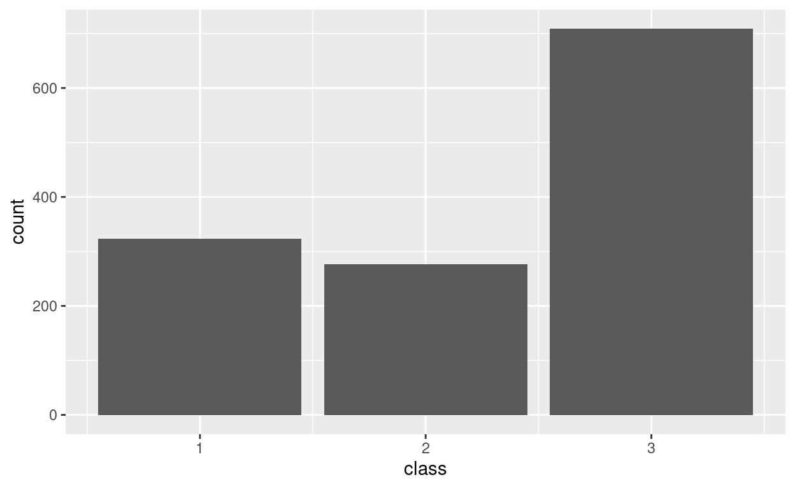

Introduction

In this session, we will learn a bit about data and how to explore it using the statistical computing language called “R”. The point is to learn a bit more about data and variables and to get a feel for the power of the tools we will be learning to use in the rest of the semester.
Another point of today’s activity is to illustrate how even though statistics is about dealing with data, those data are meaningful. They are not just numbers or names, they are a peek into the world. They offer glimpses of someone’s life, of the workings of some natural process, of some social structure, etc. Any dataset will be limited in how wide of a glimpse it gives us. The point of statistics is to help us learn and make decisions based on that glimpse.
Chunks of code
As you follow along in this activity, you will be asked to run bits of code written in the “R” language. Code will appear in special boxes like the one below. The box below is code that tells R to add the numbers 2 and 3. Click the “Run Code” button to see the result.
2 + 3Notice that there’s a mysterious “1” between two brackets in front of our answer. Why is that? It’s because R is telling us there is just one part of our answer. This may seem pedantic, but it is just R trying to help by giving us more information than we really need at the moment.
Now give it a try yourself. Tell R to add 5 and 7. Use the “Run Code” button to see the result of what you wrote, and the “Submit Answer” button to see if your code is correct (note that you can get the correct output from R without necessarily using the correct code!).
A bit about R
All of our labs will make use of the statistical computing language R. The R language represents the current state of the art for statistical computing in both academic and industrial research. It is likely to remain relevant for many years to come because it is free and open-source, meaning both that it is widely accessible and that improvements and extensions are being made continuously by a large community of professionals and hobbyists. In fact, many of the best features of R that we will be using are extensions made by people outside the “core” development team for R. These extensions are called “packages”, and they represent bundles of code that are useful for doing statistics.
Meet your data
The data we will be looking at are passenger records from the RMS Titanic, an oceanliner which famously sank on April 15, 1912. Passengers on the Titanic were divided into different “classes”, 1st, 2nd, and 3rd. Though the liner was not filled to capacity, lax safety precautions—including a failure to carry enough lifeboats—meant that many of her passengers died because they were unable to evacuate when the ship struck an iceberg. This was true for passengers regardless of class, but perhaps not equally true, as we shall see.
These data are stored in R under the name titanic.
Check out the variables
Run the chunk below to use R’s head function to show us
the first few rows of the titanic data. We can think of the
line head(titanic) as R’s shorthand for the command “let me
see the ‘head’ [first few rows] of the dataset called ‘titanic’ that is
currently in R’s memory.”
head(titanic)Each row represents a specific passenger (“case”) and each column
represents a different variable. You can use the little arrow
near the top of the table to scroll left and right if you can’t see all
the columns. Notice that there are some missing values that we
don’t have for every passenger. These are labeled NA. Now
we have our first Exercise. Provide your answers to the
Exercise in the Blackboard worksheet corresponding to this lab.
Exercise 1
Find an example of each of the following types of variable in the dataset. Explain your reasoning for each choice.
- Numerical (either discrete or continuous)
- Ordinal categorical
- Nominal categorical
Answering questions with data
Now that we’ve gotten acquainted with the kind of data we have, we can begin using it to answer some questions. This will involve simplifying the data, turning it into a summary form that makes it easier to understand. These summaries fall under the heading of “descriptive statistics”, because they are meant to describe important aspects of the data. The four types of summaries we will explore today are frequency tables, proportions, bar charts, and histograms. The questions we will attempt to answer are all about who survived and who perished on the Titanic.
Frequency tables
One way we could answer literally the question, “who survived and who died on the Titanic?” would be to read the names of each of the 1300 or so passengers in our dataset. The problem is that this would not give us much of a sense of why particular people might have survived versus not. Treating survival as a response variable, we would like to treat other variables in these data as explanatory variables. This gives us a sense of the types of people who were more or less likely to have survived, and what this tells us about the Titanic disaster as a whole.
To begin, the first thing we can do as construct a frequency table that simply counts the number of people who survived and the number of people who died. This summary will give us a sense of the scale of the disaster. The code below provides such a table.
titanic %>%
group_by(survived) %>%
summarize(n = n())We got a table that counted the number of people who did and did not survive. We went from 1300 or so rows with multiple variables each to just two numbers. A pretty concise summary! But how did we do it? Let’s break down that bit of code:
titanicis the name of our dataset.group_by(survived)tells R to group the cases in that dataset by whether they survived (TRUE) or not (FALSE).summarize(n=n())tells R to take our grouped cases and summarize them by counting thenumber of people in each group and labeling the resulting number “n”.- The funky symbol
%>%connects the three steps above and makes sure R does them in the order we want. This symbol is called a “pipe”.
Let’s try a few things to get a sense of why that code did what it
did. What happens if we change n = n() in the last line to
Number = n()?
titanic %>%
group_by(survived) %>%
summarize(Number = n())Everything looks the same except that instead of the column being labeled “n”, it is labeled “Number”. So the bit before the equals sign is how the frequency table will be labeled.
Now let’s try something that seems like a small change: Instead of
n = n() in the last line, let’s write n = m().
Only one letter, surely it can’t be that big of a difference?
titanic %>%
group_by(survived) %>%
summarize(n = m())## Error in `summarize()`:
## ! Problem while computing `n = m()`.
## ℹ The error occurred in group 1: survived = FALSE.
## Caused by error in `m()`:
## ! could not find function "m"R doesn’t like it! It reports an error because it doesn’t know what
to do with m(). That’s because n() is a
function, it is an instruction that tells R to count
the number of something. On the other hand,
m() doesn’t mean anything to R so it throws up its
hands.
We can also get counts based on other variables. For example, let’s ask how many passengers there were in each “class” by changing the grouping variable in our code:
titanic %>%
group_by(class) %>%
summarize(n = n())Exercise 2
The chunk of code below which was written to count the number of passengers with or without college degrees.
titanic %>%
group_by(degree) %>%
summarize(n = n())## Error in `group_by()`:
## ! Must group by variables found in `.data`.
## ✖ Column `degree` is not found.Explain in your own words why this chunk of code didn’t work.
Proportions
You may have heard that, when trying to evacuate the Titanic, there was a rule to put “women and children first” onto lifeboats. This suggests a hypothesis, assuming this rule was actually followed: female passengers should have survived more often than male passengers.
To see if the data are consistent with this hypothesis, we can begin
by using code similar to what we’ve been using to count the number of
male and female passengers who either did or did not survive. Notice
that we can group_by more than one variable using a list of
the variable names separated by commas:
titanic %>%
group_by(sex, survived) %>%
summarize(n = n())## `summarise()` has grouped output by 'sex'. You can override using the `.groups`
## argument.While this table contains all the information we need to test this hypothesis, it is hard to read because there were different numbers of male and female passengers. What we want to know is whether a greater proportion of female passengers survived, compared to the proportion of male passengers who survived.
We find proportions by taking a count and dividing by a sum of counts. Specifically, if we have some group “A” and want to find the proportion of the elements in group “A” that have some characteristic “B”, we find
\[ \text{Proportion of A that are B} = \frac{\text{Number of A that are B}}{\text{Total number of A's}} \]
R is a fancy calculator
Let’s use the numbers in the frequency table above to find the proportion of male passengers who survived and the proportion of female passengers who survived. This will illustrate how, although R is quite powerful, it is in many ways just a fancy calculator. But a calculator is still handy!
From the table we just made, we see that 339 female passengers survived. There are \(339 + 127\) total female passengers. So we can use R to find the proportion of female passengers who survived using the line of code below:
339 / (339 + 127)## [1] 0.7274678Notice that / stands for “division” and we put \(339 + 127\) in parentheses to tell
R that that whole sum should be in the denominator.
Exercise 3
Find the proportion of male passengers who survived. Hint 1: the numbers you need come from the same table that showed the number of female passengers who did and did not survive. Hint 2: Use the “Submit Answer” button to check if the proportion you calculated is correct..
Compare the proportion of survivors among male and female passengers—are these proportions consistent with the “women and children first” policy? Explain your reasoning.
Another way to get proportions
One thing you will notice with R is that there are many ways to do the same thing. Instead of calculating proportions by hand, we can add a line to the code we used to make the frequency table before to get R to give us the proportions of female and male passengers who did and did not survive:
titanic %>%
group_by(sex, survived) %>%
summarize(n = n()) %>%
mutate(p = n / sum(n))## `summarise()` has grouped output by 'sex'. You can override using the `.groups`
## argument.The new column p is a proportion and represents the
proportion of people in each group (either male or female) who either
did or did not survive. Notice that the numbers in the p
column for male and female survivors are the same as the ones we found
in the preceding section.
Write and run code that gives us a table, like the one above, which shows the proportion of people in each class (1, 2, or 3) who survived or died. Give that a try now by filling in the blanks in the code below:
___ %>%
group_by(___, ___) %>%
summarize(n = n()) %>%
mutate(p = n / sum(n))Bar charts
If we are looking for patterns or trends in data, it is often easier to see them with a visualization rather than a table of numbers. Bar charts make numerical relationships easy to see visually, so we don’t need to compare a bunch of numbers.
The bar chart below shows the number of passengers in each class in terms of the height of the bars.
titanic %>%
ggplot(aes(x = class)) +
geom_bar()
Pretty neat! It is now easy to see how many more 3rd class passengers there were than 1st or 2nd, and that interestingly, there are fewer 2nd class than 1st class passengers.
The code we used is similar to what we’ve been using, but differs in
some important ways: * The first line is the same, telling R what
dataset we are using (titanic). * The second line tells R
that we want to make a plot and that we want to put the
variable class along the horizontal axis of that plot (the
x axis). The “gg” in front of “plot” refers to the
“grammar of graphics”, which is the
language R uses to describe plots. In this language, different parts of
a plot are called “aesthetics”, which is why
x = class falls inside a parenthetical labeled
aes(thetic). * The final line just tells R that we want to
make a bar chart. In the grammar of graphics, different
types of charts are called geoms. * Notice that the second
2 lines are connected by a + rather than the
%>% symbol. This is a historical accident, but the
meaning of the two symbols is basically the same. Both of them are
telling R the order in which it should follow our instructions.
If we put bar charts side-by-side, we can use them to compare groups. In R, putting multiple graphs together is called faceting. Each graph is a “facet”. We can tell R to make facets based on a specific variable by adding a line to our code, like so:
titanic %>%
ggplot(aes(x = class)) +
geom_bar() +
facet_wrap("residence")The line at the end splits the plot into different “facets”, one for
each level of the residence variable. Note that we have to
put the “faceting” variable name in quotes (for some reason). The result
makes it easy to see that the distribution of passengers across classes
is different depending on where they were from—Americans on the
Titanic tended to be wealthier first class passengers, relative
to passengers from Britain or elsewhere.
Exercise 4
Make a bar chart that shows the number of people who either did or did not survive depending on their country of residence. To do this, fill in the blanks in the code below so that each “facet” corresponds to country of residence and each “facet” has two bars in it, one bar for survivors and one bar for non-survivors.
titanic %>%
ggplot(aes(x = ___)) +
geom_bar() +
facet_wrap("___")What is a possible reason why the relative number of survivors is different depending on where passengers were from?
Histograms
So far, we have been summarizing categorical variables. There are also some numerical variables in our data, for example the age of each passenger as well as how much they paid for their tickets. Let’s try making a frequency table to figure out how many people of different ages sailed on the Titanic:
titanic %>%
group_by(age) %>%
summarize(n = n())Well that’s not very helpful! R didn’t even bother to show us the whole thing. Though we can see something interesting: Age is measured in years, and for passengers at least one year old, their age is a whole number. But there are fractions of years for passengers less than a year old—these ages were measured in months rather than years.
The main point is that even though age can be measured in a more or less fine-grained manner, age is effectively continuous. We don’t want to know how many passengers were exactly 31.3491 years old, we want to get a general sense of the distribution of ages across passengers.
We can construct a summary that conveys this information using a histogram. A histogram is very similar to a bar chart; the difference is that bar charts are for categorical variables while histograms are for numerical variables. The code below constructs a histogram to summarize passenger age:
titanic %>%
ggplot(aes(x = age)) +
geom_histogram()## `stat_bin()` using `bins = 30`. Pick better value with `binwidth`.## Warning: Removed 263 rows containing non-finite values (stat_bin).The resulting histogram shows a bunch of bars, the height of which indicate the number of passengers within a particular age range. Notice that we got a couple messages from R in addition to our plot, one about “non-finite values” and another about “picking a better value”. When R says, “non-finite values”, it is talking about people for whom their age was not recorded. This is an unfortunate thing about real data: sometimes it has missing pieces. This didn’t stop R from making the plot we wanted using the non-missing data, but R wanted to warn us just in case.
The message about “picking a better value” is important: When you make a histogram, you are looking at how many things fall within a particular range of values, say, between ages 4 and 8. How do you decide those ranges? If you don’t tell R how to do that, it will decide on its own to divide up the range of values into 30 “bins”, each of which corresponds to a range of values that is the same width. This is usually not what we want.
Instead, we should decide how big or small we want those ranges to be. The following code tells R to make our histogram using “bins” that are 2 years “wide” (0-1, 2-3, etc.):
titanic %>%
ggplot(aes(x = age)) +
geom_histogram(binwidth = 2)## Warning: Removed 263 rows containing non-finite values (stat_bin).And just like we did with bar charts, we can split a histogram into different “facets”. The pair of histograms below shows the distribution of ages of passengers that either did or did not survive:
titanic %>%
ggplot(aes(x = age)) +
geom_histogram(binwidth = 2) +
facet_wrap("survived")## Warning: Removed 263 rows containing non-finite values (stat_bin).Exercise 5
Try making several different histograms of passenger age split by survival, using different bin widths of your own choice:
titanic %>%
ggplot(aes(x = age)) +
geom_histogram(binwidth = ___) +
facet_wrap("survived")What bin width do you believe gives the best visual summary and why? Describe whether the shapes of the histograms in each facet are consistent with the “women and children first” rule.
Wrap-up
Today we began our adventure by using RStudio to explore some data. We saw how to look at data and how to summarize it in various helpful ways. These were frequency tables, proportions, bar charts, and histograms.
- Frequency tables count the number of times a particular value of a particular variable (or combination of values across multiple variables) occurs in our dataset.
- We can use the counts in frequency tables to calculate proportions, which are better at conveying relative values.
- Bar charts display counts of categorical variables in a visual form that makes it easier to compare them.
- Histograms let us visually summarize counts of numerical variables by putting them in “bins”, the width of which we need to decide.